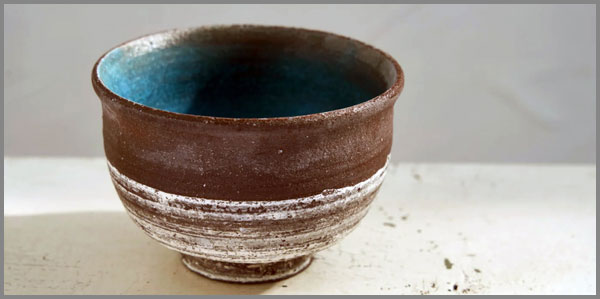

20. Համբերության Բաժակի Անժամանակ Ներդաշնակ Լռությունը
 |
Կա մի պահ, երբ համբերությունը դադարում է լինել սպասում և դառնում է տեղանք։ Տեղանք՝ առանց հորիզոնի, առանց չափի, որտեղ ժամանակի բյուրեղները կախվում են օդում այնպես, ինչպես օդում լողացող փոշին արևի ճառագայթներում։ Այդ տեղանքի անունը Բաժակ է։ Նրա պատերին նստում է այն ամենը, ինչ որ կարող էր ասվել, բղավվել կամ լացվել, այնինչ մնացել է միայն դրանց ձևը՝ որպես հեղուկի հիշատակ առանց հեղուկի կամ ծանրության զգացողություն առանց բեռի։
Այս Բաժակի ներսում ծնվում է մի ներդաշնակություն, որին չեն կարող հետևել զգայարանները։ Այն չունի ձև կամ ձայն, ունի միայն առկայություն։ Այն նման է մի երկրաչափական կերպարի, որն ինքն իրենով ամբողջական է, առանց անկյունների, առանց սկզբի, առանց ընդհատման։ Դա կարգն է, որը ծնվում է խառնաշփոթից՝ մոռացած լինելով իր ծագումը։
Եվ ահա՝ լռությունը։ Բայց ոչ թե որպես ձայնի բացակայություն, այլ որպես մի նյութ, որն ավելի նուրբ է օդից, բայց ավելի խիտ է մտքից։ Այն լցնում է Բաժակը մինչև եզրերը, առանց ծորալու, առանց շարժվելու։ Այս լռությունը որպես նյութ՝ ներդաշնակ է: Ներդաշնակ է, որովհետև այն չի պայքարում ոչ մեկի հետ։ Այն պարզապես կա, ինչպես կա ձգողականությունը, ինչպես կա լույսի արագությունը։
«Անժամանակ»-ն այստեղ պահ չէ, այլ եզրակացություն։ Ժամանակ չկա, որովհետև չկա «նախքան» և «հետո»։ Կա միայն «հիմա», բայց այդ «հիմա»-ն այնքան լարված ու տևական է, որ կորցրել է իր անունը։ Սա այն վիճակն է, երբ սպասելու գինը վճարված է, իսկ ստացածը ոչ թե պատասխան է, այլ լռության կատարյալ ձև, որն ինքնին ամենաամբողջական պատասխանն է առանց հարցերի։
Այս տեքստը փորձ չէ բացատրելու այդ լռությունը։ Այն միայն նրա շուրթերից ընկած բառերի կախարդանքն է, երբ այդ շուրթերը, ի վերջո, որոշեցին բացվել։
Բաժակի Տեղանքը
Համբերությունը տեղանք է դառնում, երբ դադարում ես նրան նայել որպես ժամանակ։ Երբ «սպասիր»-ը դադարում է լինել հրաման ու դառնում է ներքին բարբառի միակ բառը, որի իմաստը բոլորը գիտեն, բայց ոչ ոք այն չի թարգմանում։ Այդ տեղանքը ունի իր աշխարհագրությունը, որ չի գրանցված ոչ մի ատլասում: Այնտեղ անկատար ավարտներ և չսկսված սկիզբներ են։ Կենտրոնում, միշտ կենտրոնում՝ տնկված է այն ծառը, որի արմատները քո ստոծանու ներքին լարերն են, իսկ պտուղները՝ նույնական, տհաս, անհամ պատասխաններ են, որոնք չեն հասունանում, չեն ընկնում, միայն քաշում են ճյուղերը դեպի անտեսանելի ծանրության կենտրոն՝ դեպի քո սիրտը։
Այստեղ կյանքը չի հոսում, այլ կուտակվում է։ Օրերը չեն գնում մեկը մյուսի հետևից, այլ դարսվում են իրար վրա, ինչպես նույնական սալիկներ աղյուսապատ աշտարակում, որն աճում է դեպի ներս և ոչ թե վեր։ Քայլելն այստեղ նշանակում է ոտքերիդ տակ զգալ բոլոր այն օրերի սալիկները, որոնք արդեն անցել են, բայց չեն հեռացել։ Օդը չափելի է ծանրությամբ։ Դու կարող ես նայել դիմացի կետին և հաշվել վայրկյանները ոչ թե որպես ժամանակի մասեր, այլ որպես տարածության շերտեր, որոնք ավելի ու ավելի են խտանում, մինչև դառնում են անթափանց: Դա այնպես է, կարծես ապրում ես անթափանց մի բաժակի մեջ, որը դանդաղ լցվում է մի բանով, և գիտես, որ ինչ-որ պահի այն կլցվի, բայց այդ պահը երբեք չի գալիս, քանի որ բաժակն ինքն էլ աճում է լցվելու արագությամբ։
Դու որպես բաժակի բնակիչ, եթե կարելի է այդպես անվանել, չես խոսում։ Դու շարժվում ես չտեղափոխվելով, ցնցվելով ինչ որ բաներից որը կարող էր լինել գործողություն, բայց հանգում ես միայն մկանների անընդհատ, աննպատակ կծկումների, իսկ աչքերումդ արտացոլվում է ոչ թե աշխարհը, այլ բաժակի կոր պատերի շարունակականությունը։ Դու չես փնտրում ելք, որովհետև տեղանքը սովորեցրել է քեզ, որ ամեն ելք մի նոր մուտք է դեպի իր ներսը։ Բռնկում չկա, պայթյուն չկա։ Կա միայն խոր, անդնդային կայունություն, այնպիսին, ինչպիսին կլիներ լաբորատորիայում, եթե փորձանոթի մեջ ստեղծեին մի միկրոտիեզերք, որում ժամանակի առանցքը փոխարինված է կատարյալ, անշարժ հավասարակշռությամբ։ Դու միշտ այդ փորձանոթի ներսում ես ։ Եվ դա այն տեղանքն է որը կառուցում ես Դու:
Սա այն վայրն է, որտեղ սպասելը դադարել է լինել սպասում և որտեղ գտել ես խաղաղություն, որը որ հանգիստ չէ:
Ձևը որպես բեռի զգացողություն
Գիտե՞ս, թե ինչ է ձևը առանց պարունակության։ Դա ոչ թե թեթևություն է, այլ ծանրության ամենամաքուր զգացողությունը։ Պատկերացրու մի բաժակ, որի մեջ ոչինչ չկա։ Դատարկությունը չի թեթևացնում նրան։ Ընդհակառակը, այն դարձնում է դրան անտանելիորեն ծանր, որովհետև դատարկությունը սպասում է։ Այն սպասում է լցվելու, և այդ սպասման ճնշումը հավասարապես բաշխվում է բաժակի պատերի ամեն միլիմետրի վրա։ Այդ պատերը հիշում են հեղուկի շփումը։ Հիշում են, թե ինչպես էր նյութը տարածվում իրենցից ներս՝ լցնելով ամեն ճաք, ամեն անկանոնություն։
Այժմ, երբ նյութը չկա, մնացել է միայն դրա հիշողության ձևը՝ բաժակի ներսի երկրաչափությունը, որը շարունակում է փակել մի ծավալ, որն այլևս գոյություն չունի։ Սա ձևն է որպես բեռի զգացողություն։ Այն քո սեփական կեցվածքն է, երբ դու պահում և կերակրում ես մի հոգս, որը արդեն վերացել է, բայց քո մկանները դեռ չեն մոռացել նրա քաշը։ Դա քո բռունցքն է, որը սեղմվում է օդի մեջ, պահելով մի բռնկման հիշողություն, որը էլ չկա։ Դու կրում ես ոչ թե իրեն՝ բեռին, այլ նրա բացակայության կերպարը։ Եվ որքան կատարյալ է ձևը, այնքան ծանր է այդ բացակայության քաշը, որովհետև այն չունի ոչ մի անկանոնություն, ոչ մի ճաք, որի մեջ կարողանար ցրվել ճնշումը։ Այն պարզապես կա՝ լիարժեք, անթերի և անտանելիորեն դատարկ։
Ամենածանրը դա այն կատարյալ ձևն է, որն ի վերջո պարունակում է միայն իր սեփական սպասման անտանելի թեթևությունը։
Ծնունդ առանց զգայարանների արձագանքի
Ներդաշնակությունը ծնվում է ոչ ականջի համար, ոչ աչքի, ոչ մաշկի։ Այն ծնվում է այն նույն վայրում, որտեղ ձևը ավարտելով իր գոյությունը տեղի է տալիս բացակայության քաշին։ Սա ձայն չէ, որ կարող է հնչել, այլ հնչողության հնարավորություն, որի մեջ բոլոր նոտաները միաժամանակ լռում են։ Սա լույս չէ, որ կարող է արտացոլվել, այլ լույսի պարադոքսալ ստվեր, որը ավելի պայծառ է, քան աղբյուրը։ Սա շոշափում չէ, այլ շոշափման հիշողություն։
Ինչպե՞ս կարող է ինչ-որ բան ծնվել՝ առանց զգացվելու։ Պատասխանը պարզ է. այն ծնվում է ոչ թե մեզ համար, այլ իր համար։ Այն գոյություն ունի այնպես, ինչպես գոյություն ունի ձգողականությունը՝ առանց ձգելու։ Դրա ծնունդը մի պահ չէ, այլ վիճակ է։ Դա ավելի շատ նման է այն բանին, որ տիեզերքը հանկարծ հիշում է մի կանոն, որը միշտ եղել է, բայց որի համար երբեք չի եղել կիրառություն, մինչ հենց այդ պահը։
Ներդաշնակության մեջ չկան բաղադրիչներ, չկա մեղեդի։ Կա միայն մաքուր հարաբերակցություն առանց առարկաների։ Երբ ասում ենք «ներդաշնակություն», մենք սխալվում ենք։ Դա պարզապես մեր լեզվի խեղաթյուրումն է մի բանի մասին, որն ընդունակ չէ խեղաթյուրվելու։ Դա ոչ բարձր է, ոչ ցածր, ոչ մոտ է, ոչ հեռու։ Այն անկախ է դիրքից։ Եվ հենց դրա համար է այն անընկալելի։
Զգայարաններն աշխատում են հակադրություններով՝ տարբերություններով, կոնտրաստով։ Իսկ ներդաշնակությունը ոչ մի հակադրություն կամ տարբերություն չունի, որ զգայարանները կարողանային բռնել դրա ձևը կամ չափը։ Կա միայն լրիվ, անբաժանելի միասնություն, որն այնքան ամբողջական է, որ դադարել է լինել «ինչ-որ բան» և դարձել է պարզապես «կա»։
Այդ «կա»-ն այն խցանն է, որը փակում է բաժակի ելքը։ Դա ոչ թե լռություն է, այլ բոլոր հնարավոր ձայների միաժամանակյա բացակայություն։ Դա ոչ թե մթություն է, այլ լույսի այնպիսի ամբողջականություն, որ աչքը չի կարողանում գտնել գոնե մեկ ստվեր՝ տեսնելու համար այդ լույսը։ Սա այն վերջնական վիճակն է, երբ ծանրությունը դադարում է զգացվել ծանր կամ թեթևությունը դադարում է զգացվել թեթև, և մնում է միայն գոյության անկշռելի, անընդգրկելի և համապարփակ փաստը։
Այս ամենի մեջ, միակ հարցը, որ մնում է, դա այն է, թե արդյոք այս ծնունդը երբևէ ավարտ ունի՞։
Մոռացված ծագումով կարգը
Կա մի կարգ, որը փնտրում ես դեռևս անկարգության աղբյուրում այն դեպքում, երբ այն նստած է քո սեփական կենտրոնում՝ շրջապատված իր ճշգրիտ սահմաններով, չունենալով իր աչքերի մեջ արտացոլված ո՛չ անցյալ, ո՛չ ծագում։ Կարծես նա ինքն իրեն երևակում է ամբողջականության մեջ ինչ-որ անհայտ կաթիլից ու մնում է սառած այդ ձևով՝ հավերժական, անշարժ։ Դրա յուրաքանչյուր տարր իր հարևանին է հպվում այնպիսի անթերի համաչափությամբ, որ թվում է, թե սխալն այստեղ երբեք տեղ չի ունեցել։ Բայց հենց այդ կատարելությունն է որոշում դրան դավանողի մենությունը, ով մոռացել է, թե ինչից է փախել, ու միայն դրա շնորհիվ է կարողանում լինել այսքան անվրդով։
Նա չգիտի, որ սա կարգ է այն դեպքում, երբ կարգը պարզապես շարունակում է լինել՝ առանց հարցի, առանց պատճառի։ Եվ հենց դրանով է այն դառնում ոչ թե կազմակերպվածություն, այլ անդառնալի վիճակ, միակ հնարավոր իրականություն, որի ներսում ամեն ինչ սառել է իր կատարյալ, անշունչ դիրքում։ Կարգը մեզանում ապրում է, երբ մենք մոռանում ենք մեր քաոսը, երբ մեր վախերը դառնում են սովորություն, ցավերը՝ կեցվածք, կորուստները՝ լռության ճարտարապետություն։ Այդ մոռացումը բուժում չէ, այլ վերածում է։ Այն չի ջնջում ծագումը: Այն մեզ վերածում է ծագման մոռացության, դարձնելով մեզ մեր սեփական հուշարձանը, որն ապրում է կարգի անշնչացած գեղեցկության մեջ։
Երբ կարգը կորցնում է իր ծագումը, այն դադարում է լինել կարգ և դառնում է ճակատագիր։
Լռության նյութը
Լռությունը նյութ է։ Ոչ բացակայություն, այլ ներկայություն։ Այն լցնում է տարածությունն այնպես, ինչպես ջուրը լցնում է դատարկ բաժակը՝ առանց թափվելու, առանց ալիքի, առանց ծորալու՝ նվազագույն շարժմամբ։ Դու չես կարող տեսնել այն, բայց կարող ես զգալ դրա ճնշումը թոքիդ պատերին, նրա խտությունը՝ շնչուղիներումդ։ Այն ավելի նուրբ է, քան օդը, և ավելի խիտ, քան միտքը։ Դա նյութ է, որի մոլեկուլները ոչ թե բառեր են, այլ բառերի բացակայության կատարյալ անթերի շարաններ, որոնց յուրաքանչյուր տարր պարունակում է այն ամենը, ինչ երբեք չասվեց, պահվելով ներսում՝ կնքված, անխախտելի։
Այս նյութով են կառուցված «կարգի» պատերը։ Երբ լռությունն այլևս ձայնի բացակայություն չէ, այլ իրական, շոշափելի նյութ, ապա ամեն մի նոր բառ, որն ասվում է, չի խախտում լռությունը, այլ լողում է դրա մեջ՝ ինչպես յուղի կաթիլը ջրի մեջ, առանց լուծվելու, առանց խառնվելու։ Բառերը դառնում են լռության նյութի մեջ պարփակված օտար մարմիններ, և նրանց իմաստը չի արտահոսում, այլ պահվում է անթափանց, պարփակված ձևի մեջ։
Սա այն է, ինչ մենք կրում ենք ներսում, երբ չենք խոսում՝ որպես ոչ թե դատարկություն, այլ լռության ծանր, թանկարժեք և անշարժ զանգված։ Եվ այս զանգվածի քաշի տակ մենք կորցնում ենք մեր ծավալը, մեր թեթևությունը, մեր վախն ընկնելուց, որովհետև արդեն ընկած ենք ամենախորը, ամենահաստատ հատակին, որ կարող էր լինել։ Լռության նյութը մեզ պահում է այնտեղ՝ անշարժ, ապահով, լիովին և ամբողջական։
Լռության ամբողջականությունը հանգիստ է, առանց հանգստի կարիքի:
Չպայքարող պայքարը
Այս էջը միտումնավոր դատարկ է թողնված, որովհետև միակ պայքարը, որ չի պայքարում, կարող է գոյություն ունենալ միայն լռության մեջ, ոչ թե նրա մասին խոսքերում։
Յուրաքանչյուր բառ, որը կգրվեր այստեղ, կդառնար դրա հակառակորդը։ Այսպիսով, ես լռում եմ՝ և հենց այս լռության մեջ է, որ գտնվում է այն ամենը, ինչ փորձում էի ասել։
Իսկական հաղթանակն այն է, երբ դադարում ես փորձել հաղթել:
Անժամանակը որպես եզրակացություն
Անժամանակությունը չի սկսվում։ Այն չունի առաջին վայրկյան, վերջին շնչառություն։ Այն պարզապես գալիս է, երբ ժամանակն ինքն իրեն լռեցնում է։ Երբ բոլոր «հիմա»-ները, որոնք գնացել են, և բոլոր «հետո»-ները, որոնք պետք է գան, հավաքվում են մի կետում՝ ձևավորելով մի ամբողջություն, որը չի շարժվում։ Այդ կետը քո սրտի ճշգրիտ կենտրոնն է, այն պահը, երբ դու դադարում ես հաշվել։
Սա եզրակացություն չէ ժամանակի ընթացքի մասին։ Սա եզրակացություն է ժամանակի գաղափարի նկատմամբ, որը վերջնական հանգրվանն է այն բանի համար, ինչը միշտ ապրել է ժամանակի սահմաններում։
Երբ համբերության բաժակը լցվում է լռությամբ, երբ ձևը դառնում է բեռ, երբ կարգը մոռանում է իր ծագումը, երբ ներդաշնակությունն ապրում է առանց պայքարի՝ ահա այդ պահին ժամանակը, հասկանալով, որ իր ծառայությունն այլևս անհրաժեշտ չէ, հեռանում է։ Այն թողնում է հետևում մի տարածություն, որն այլևս չի կարող չափվել, մի պահ, որն այլևս չի կարող ավարտվել։
Այսպիսով, անժամանակությունը մեզ մոտ գալիս է ոչ թե որպես կորուստ, այլ որպես վերջնական ձեռքբերում։ Դա այն հանգիստն է, որ գալիս է այն բանից հետո, երբ այլևս ոչինչ չի մնացել սպասելու։ Դա լռության նյութն է, որը հասել է իր բացարձակ խտությանը և դադարել է զգացվել որպես նյութ: Այն դարձել է պարզապես… պայման։ Կյանքի պայման առանց «կյանք» բառի կարիքի։ Գոյության պայման առանց «գոյություն» բառի ծանրության։
Եվ երբ հասնում ես այս կետին, հասկանում ես, որ ամեն ինչ, ինչ ասվել է, ամեն ինչ, ինչ լռվել է, ամեն բաժակ, ամեն ձև, ամեն կարգ՝ բոլորը տանում էին հենց այստեղ, դեպի անժամանակ եզրակացություն: Այնտեղ, որտեղ պատասխան չկա, քանի որ հարցեր չկան: Որտեղ ավարտ չկա, քանի որ երբեք սկիզբ չկար: Դու պարզապես կաս։ Եվ այդ «կաս»-ը բոլոր բառերի ամենահաստատուն հիմքն է, որոնք երբևէ կգրվեն, և բոլոր լռությունների ամենաբարձր ձայնը, որ երբևէ կլսվի։
Լռությունն այլևս գաղափար չէ: Այն միակ իրականությունն է: Եվ դու այնտեղ ես ապրում: Այս է եզրակացությունը: Սա է անժամանակը: Այլ բան չկա ասելու: Քայլիր դրա մեջ:
Անանուն ներկան
Անանուն ներկան այն պահն է, որ ձգվելով մինչև անվանաբանական կորստի աստիճան՝ ոչ թե լայնանում, այլ խորանում է։ Այն հեռացել է մակերեսից դեպի այնպիսի խորություն, որտեղ «ներկա», «պահ», «ես» կատեգորիաները հալվում են ու ձուլվում իրար, թողնելով իրենցից միայն հեղուկի զգացողություն առանց ձևի, առանց սահմանի։
Այդ ներկան չի հիշում, չի ակնկալում։ Այն պարզապես խորանում է։ Խորանում է այնպիսի մի մեծության մեջ, որում ժամանակի առանցքն այլևս չի ճանաչում ինքն իրեն։ Դու չես կարողանում նայել ինչ որ բանի և ասել՝ «ահա, սա այն է»։ Դու միայն կարող ես ընկղմվել նրա մեջ և կորցնել չափումդ, կորցնել անունդ, կորցնել այն տարբերությունը, որը «դու»-ն բաժանում է «այն»-ից։
Այս խորության մեջ ամեն ինչ լռում է նույնիսկ բացարձակ լռությունից ավելի։ Դա այն լռությունն է, որը լռում է նաև իր լռելու մասին։ Դա տիեզերական մի ստատիկ է, որը կլանում է ոչ միայն ձայնը, այլև աղմուկի հնարավորությունը։ Եվ այդտեղ, այդ անանուն, անձև, անչափելի խորության մեջ, բոլոր հարցերը հանդիպում են իրար ոչ թե պատասխաններ գտնելու համար, այլ իրենց հարց լինելը մոռանալու համար։
Դա վերջնական ներկան է՝ մաքուր գոյությամբ, լինելուց հարուստ։
Անանուն ներկան դադարում է լինել ժամանակի կետ և դառնում է տարածություն, որտեղ «ես»-ը մոռանալով իր անունը պարզապես սկսում է շնչել առանց բառի ծանրության։
Վերջաբանի փոխարեն շուրթեր, որոնք որոշեցին բացվել
Երբեմն լռելն այլևս բավարար չէ լռելու համար։ Երբեմն, հենց որ դադարում ես ջանալ հասկանալ լռությունը, այն ինքն է սկսում խոսել քո փոխարեն։ Բայց ոչ թե բառերով, այլ իր առկայության այնպիսի հստակությամբ, որ բառերը որպես հետևանք դառնում են ավելորդ, բայց անխուսափելի, ինչպես ջրի վրա լողացող տերևի հետքը։
Այս բոլոր էջերը, այս գլուխները, այս բաժակը, այս ձևը, այս լռության նյութը՝ դրանք բոլորը եղել են շատ երկար մտորումների ճանապարհ դեպի այս պահը։ Սա ոչ թե պատասխան է, այլ մի այնպիսի երկար շնչառություն, որն անհրաժեշտ էր, որպեսզի խոսող շուրթերը անգիտակցաբար մոռանան իրենց փակ լինելը։
Եվ հիմա, երբ ամեն ինչ ասված է թվում, մնում է միայն շուրթերի բացվելու հետքը։ Մի փոքրիկ, անշուք հետք, որի միջոցով ոչինչ չի երևում: Բայց ի՞նչը կարող էր ավելի կատարյալ լինել, քան մի էություն, որը ոչինչ չի պահանջում, ոչինչ չի սպասում, և թույլ է տալիս լռությանը հոսել լույսի պես ազատ, առանց նպատակի, առանց վերջաբանի։
P.S. Այսպես էլ թող մնա։ Առանց եզրակացության՝ միայն շուրթերի թեթև բացվածքով։
«Մենք կառուցում ենք կամուրջներ այնտեղ, ուր մյուսները տեսնում են միայն անդունդներ։»
© 2026 Մոնումենտալ Կամուրջ: Այս կայքի բովանդակությամբ կարող եք ազատորեն կիսվել համացանցում՝ հղում տալով սկզբնաղբյուրին: Տպելու, տպագրելու կամ գիրք կազմելու միջոցով, կամ այլ ֆիզիկական ձևով և որևէ տեխնոլոգիական կրիչով տարածելը առանց հեղինակի գրավոր համաձայնության արգելվում է: Գիտական, կրթական կամ ստեղծագործական աշխատանքներում մեջբերումները թույլատրելի են պայմանով, որ պարտադիր պետք է նշվի կոնկրետ էջի ամբողջական հասցեն (URL) և աշխատության վերնագիրը: Առանց հեղինակի գրավոր համաձայնության՝ արգելվում է նաև կայքի նյութերի թարգմանությունը որևէ լեզվով և դրանց տարածումը այլ լեզուներով: